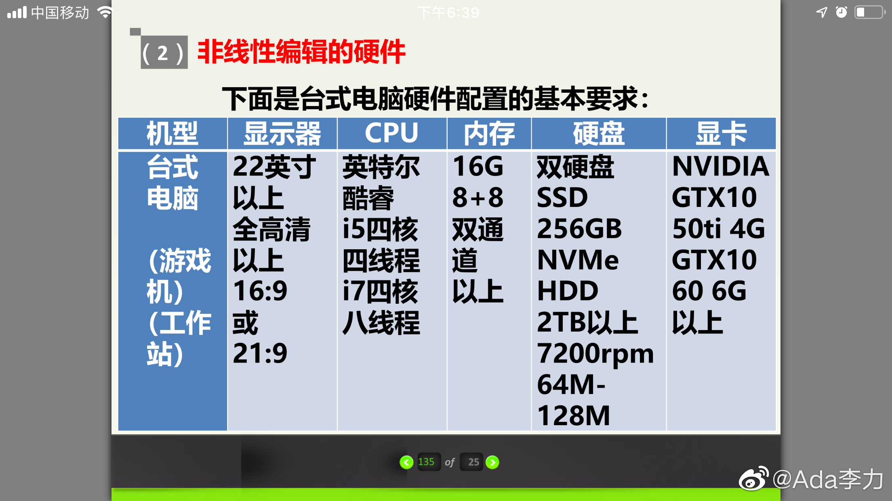
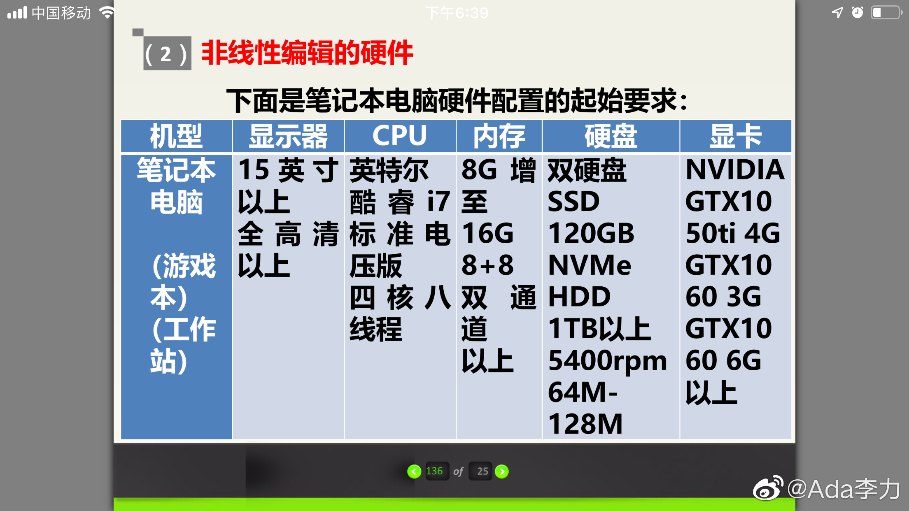

#不知道有什么用的小知识# 法国导演卢米埃尔在放映他拍摄的《火车进站》《工厂大门》时，被认为是电影的诞生日。那个时候因为胶片的长度限制，这些短片都是50秒。现在小视频平台的小视频基本都在一分钟以内，快手是56秒，跟100多年前电影的时间限制是一样的。
#不知道有什么用的小知识# 单反相机叫了这么长时间，这两天才知道是单镜头反光板相机的简称。以前老式相机取景框跟感光板是不同的光路，也称为旁轴相机。而这带来的问题是无法进行长焦距的拍摄。相机加了反光板以后，取景框看到的内容就跟感光板是一样的，快门按下时把反光板收起来，那么光线就进入到反光板里了。旁轴相机依旧有市场，比如著名的莱卡相机。
//@韩磊想改昵称:倒数第二段最后一句没写对。按下快门钮，反光板升起，快门打开，光线进入感光元件。反光板升起会有震动，低速快门时导致画质模糊，所以略好的数码单反都有反光板预升功能：先升起反光板，确认不影响拍摄时再开启快门。无反机则是光线直接进感光元件，取景器是电子影像。@Ada李力:#不知道有什么用的小知识# 单反相机叫了这么长时间，这两天才知道是单镜头反光板相机的简称。以前老式相机取景框跟感光板是不同的光路，也称为旁轴相机。而这带来的问题是无法进行长焦距的拍摄。相机加了反光板以后，取景框看到的内容就跟感光板是一样的，快门按下时把反光板收起来，那么光线就进入到反光板里了。旁轴相机依旧有市场，比如著名的莱卡相机。
#创业#之前的创业项目，有内容视频制作，我查阅了一下资料后，就买了个游戏本当做视频制作的电脑。当时基本认知，就是需要处理器特别快，需要硬盘读取速度快。今天看到，有人给了个视频编辑的台式机和笔记本的建议配置。发现视频编辑的电脑跟游戏本确实是一个类别的。 